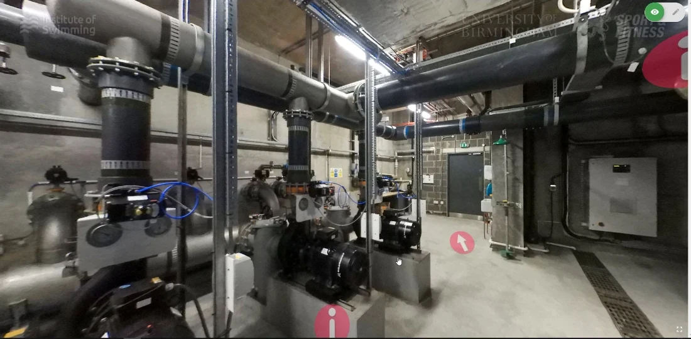
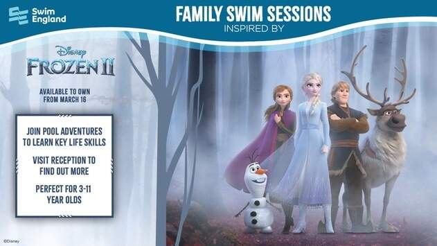

SEQ Level 1 Swimming Assistant
I redeveloped content for the blended Swimming Assistant programme, updating the learning material and producing additional videos to support lesson planning.
About the Level 1 qualification ↗Creative E-Learning DeveloperLearning games, animation & interactive coursesArticulate 360 · Construct 3 · HTML/CSS · SCORM
Blended learning · Animation · Video
I developed learning resources for the Institute of Swimming, from interactive explanations of pool plant equipment to online training for swimming teachers and family-session activators.
Technical learning

Pool plant-room view with navigation markers
I developed resources to help turn face-to-face pool plant training into a blended programme, restructuring the material and creating interactive explanations of water treatment and filtration.
Diagrams and animations bring technical processes into view, from valve operation and filter backwashing to waterborne organisms. The selected examples sit alongside recorded introductions to pool water and plant equipment.
A 360-degree plant-room tour lets learners explore equipment in context. It supports preparation for a practical visit and gives learners a way to revisit the setting afterwards. The example here is a recorded walkthrough.
View pool plant course information ↗Activator training

Frozen 2 artwork promoting Disney-inspired Family Fun swim sessions
I helped design and produce online activator training for Disney-inspired family swimming sessions. The work began with Toy Story 4 in 2019 and continued with Mickey and Friends and Frozen 2 collaborations.
The resources supported the people delivering the sessions, introducing the activator’s role and responsibilities alongside guidance for running the activities. My contribution also included producing a Family Fun activity video.
The recordings show the course introduction, activator guidance and themed activities, including a Duke Caboom activity and poolside demonstration.
About Disney Family Fun swim sessions ↗Further course development
I redeveloped content for the blended Swimming Assistant programme, updating the learning material and producing additional videos to support lesson planning.
About the Level 1 qualification ↗I took a lead role in creating a blended Teaching Swimming programme, combining story-led scenarios about a newly qualified teacher with learning activities and video.
About the Level 2 qualification ↗Course names reflect the projects at the time. Links lead to newer course and campaign information.